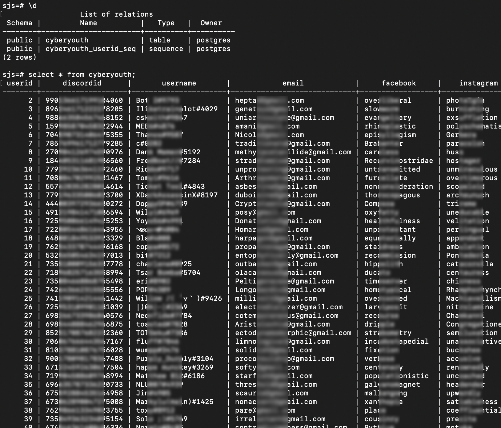
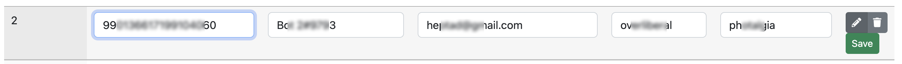

Managing Social Virtual Group Members
for Hong Kong Youth Services using a Discord Bot
Markus Lu
I am the Head Developer for the project "Managing Social Virtual Group Members for Hong Kong Youth Services using a Discord Bot".
This project serves the 6PM Cyber Youth Support Team at the
non-profit organization St. James' Settlement in Hong Kong.
1. Introduction
Severe social withdrawal, also known as Hikikomori, is defined as the condition where a youth withdraws into
the home and does not participate in society for a period of over six months (Wong,
2015), and these youths are also referred to as the hidden youth.
Hidden youth has become a serious societal issue in developed countries nowadays, e.g., Japan (Watts, 2002) and Korea (Lee et al., 2013).
According to a study by Wong et al. (2015),
around 2% of the Hong Kong population would be classified as having severe social withdrawal.
The number of hidden youths in Hong Kong is expected to be 140,000 (Durston, 2019).
The social distancing measures for the COVID-19 pandemic have worsened the situation.
St. James' Settlement (SJS) is one of the non-profit organizations in Hong Kong
offering government-funded social services to hidden youths.
Due to the advancement in Internet technologies, many hidden youths can be found online and they are referred to as
cyber youths.
SJS has established a team called the 6PM Cyber Youth
Support Team, which conducts youth outreach, support, and counselling through the online medium.
They provide online social forums for youngsters to communicate with each other, and social workers will also hold
events to regularly motivate teenagers to have a mentally and socially positive life.
One of the main online social platforms maintained by the 6PM Cyber Youth Support Team is a Social Virtual Group for invited cyber youths on
the Discord platform, which contains thousands of active users.
The social worker has identified and invited cyber youths from social networking sites, online forums, and
case referrals to their Discord server (which is a Discord feature for forming a virtual group of members).
It is a heavy task to manage a Discord server; one of the duties of the social workers at 6PM is to maintain the
contacts of the server members.
But direct messaging each of them for collecting and updating their contact details is tedious and time-consuming.
Discord has offered programming tools for developing Discord bots to act as server users to communicate with group
members.
Therefore, this project aims to develop an information system with a Discord bot to help the administrator and
social workers in St. Jame's Settlement manage Discord users more easily.
1.1 Project Aim and Objectives
This project aims to develop a Discord bot and a web application for managing the Discord server members at the
6PM Discord server. The following are the project objectives:
- Communicates with staff in the 6PM Cyber Youth Support Team to gain insight into the existing workflow and project goals
- Designs the membership registration system in Discord
- Develops a Discord bot for the membership information collection
- Set up a relational database for membership storage
- Design and develop the web application for managing and updating the membership information in the database
- Provides training to staff on behalf of management to enhance long-term service quality and productivity
2. Methodology and Implementations
2.1 System Overview

I used the programming language Python and a number of Python programming frameworks in my implementation.
My solution contains three components that are to be deployed to the computer server at the St. James' Settlement (SJS):
- Database:
The user database is relational tables where data is arranged in rows and columns.
We keep the information of the SJS Discord server members, including their Discord IDs, Discord names, email addresses, Facebook IDs, and Instagram IDs.
- Discord Bot:
The Discord bot is a computer program that acts as a user-like member in the SJS Discord server.
It can be used to automate various actions and interacts with the users.
My Discord bot reads messages and slash commands from users,
and will then send response messages and/or input forms to users for collecting the user information.
- Web Application for SJS Staff:
This web application is a website for SJS staff to administer and manage the user database through a web browser.
SJS staff can browse all the stored user information in a user-friendly interface.
They can also create new user information, edit and delete existing user information.
2.2 Database
I used PostgreSQL,
which is one of the world's most advanced open source database management system.
The Discord server members information is kept in a relational database table "cyberyouth".
In the following diagram, I used psql (the terminal-based front-end to PostgreSQL)
to display the table properties and the contents of the table "cyberyouth".
SQL statements can be used in psql to manipulate and retrieve data in the PostgreSQL database.
Note that the table contents are generated by me using another computer program on both real and synthetic user data.

2.3 Web Application
I used the Python web application framework Flask to develop the web application.
For the web pages generated by the web application,
I used the CSS frameworks Bootstrap 5.2 and DataTables, and the JavaScript libraries JQuery and Tabledit.
To avoid reloading of the web page upon each user interaction,
I also used AJAX
such that only part of the web page will be updated upon a user interaction in the web browser.
-
Listing users' data:
A SJS staff can log in to the web application through a web browser.
The following data table showing the user information in the user database will be displayed.
Note that due to AJAX, the table content is retrieved from the database every time when the user interacts with the data table, e.g., sorting and searching.
It allows multiple SJS staff to manage the database at the same time.
-
Creating a new user:
A SJS staff can create a new user easily by clicking on the "Create new record" button.

When a user is to be inserted into the database table "cyberyouth",
my program will make sure that there is no existing user with the same Discord ID; otherwise, the operation will fail with a notification to the user.
A notification will also be shown for a successful user creation.


-
Editing/Deleting an existing user:
A SJS staff can edit or delete an existing user easily by clicking on buttons on the right-hand side of the corresponding user data row.

References
Lee Y. S., Lee J. Y., Choi T. Y., Choi J. T. (2013). Home visitation program for detecting, evaluating and
treating socially withdrawn youth in Korea. Psychiatry and Clinical Neurosciences, 67, 193–202.
Watts, J. (2002). Tokyo public health experts concerned about "hikikomori". The Lancet, 359(9312),
1131.
Wong, P. W., Li, T. M., Chan, M., Law, Y. W., Chau, M., Cheng, C., ... & Yip, P. S. (2015). The prevalence and
correlates of severe social withdrawal (hikikomori) in Hong Kong: A cross-sectional telephone-based survey
study. International Journal of Social Psychiatry, 61(4), 330-342.